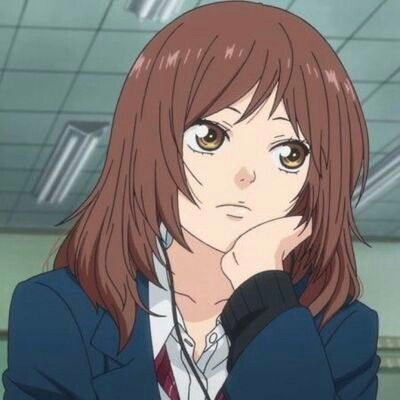
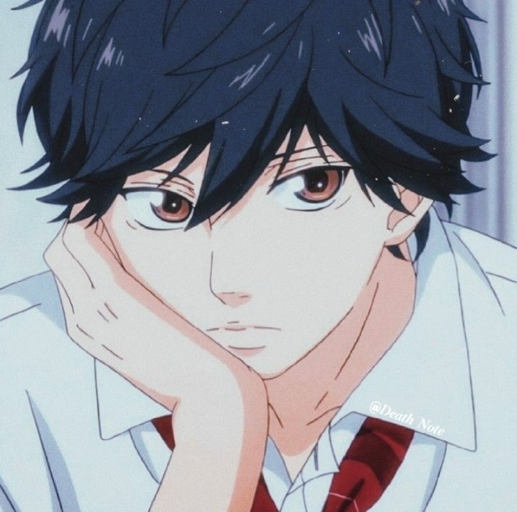
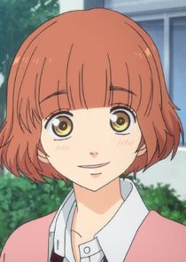
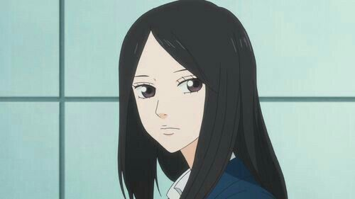
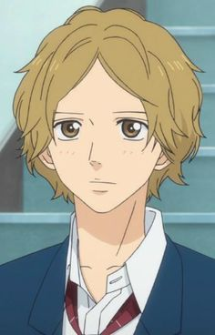
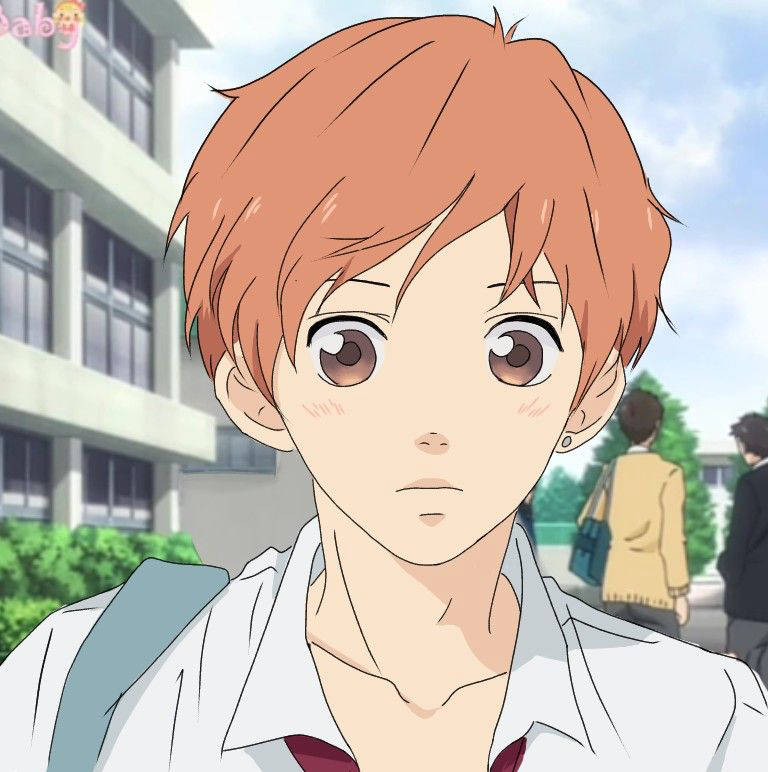
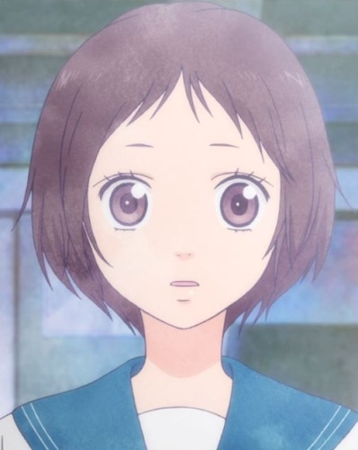

Futaba Yoshioka (吉岡 双葉, Yoshioka Futaba) es la protagonista femenina de Ao Haru Ride. es una chica alegre que va en segundo año de secundaria aveces en un poco terca e infantil pero esto va a de acuerdo a su personalidad.

Kou Mabuchi (馬渕 洸, Mabuchi Kou) es el protagonista masculino de Ao Haru Ride es conocido por tener una relación amorosa con Futaba, compañera de clase y vecina.

Yuuri Makita (槙田 悠里, Makita Yuuri) es una compañera de clase de Futaba. Luego de que Futaba la defendiera frente Asumi y Chie se hacen amigas, se enamora de Kou después de que la ayudara durante el campamento escolar que realizaron, sin embargo luego de que la rechazara decide ayudar a Futaba para que pueda estar con él. Actualmente está en una relación con Haruhiko Uchumiya.

Shuuko Murao (村尾 修子, Murao Shūko) es amiga de Futaba y Yuuri, antes era conocida como un "lobo solitario", ya que siempre estaba sola. Está enamorada de Youchi Tanaka desde su primer año de escuela media.

Aya Kominato (小湊 亜耶 Kominato Aya) es un compañero de clases de Kou, Futaba, Yuuri y Shuuko, estando enamorado de esta ultima, se ha convertido en un confidente de Kou y como tal su mejor amigo.

Touma Kikuchi (菊池 冬馬, Kikuchi Touma) es un estudiante de segundo año de preparatoria. Es uno de los personajes principales secundarios de la serie. (A la mayoría de los fans nunca le gusto que estuviera con Futaba)

Yumi es una antigua compañera de clases de Futaba Yoshioka durante la escuela media, además de ser su mejor amiga hasta que decidió alejarse de ella por creer que estaba enamorada de Naito.